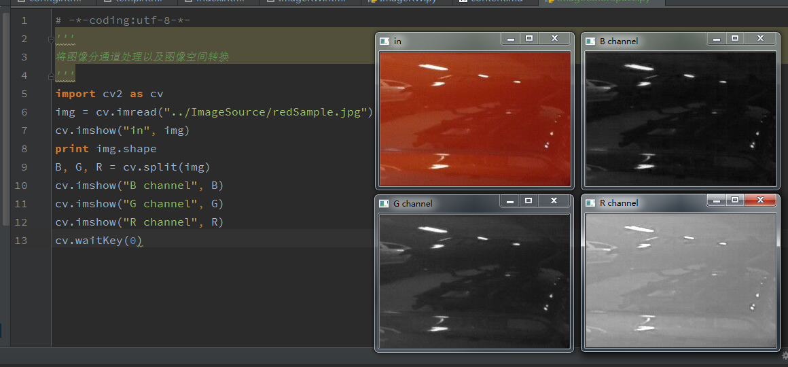
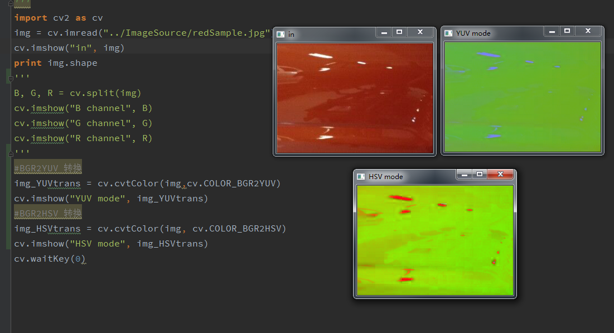

图像色彩空间
1.RGB
RGB是最常用的色彩空间，将一副图像表示为R、G、B三个通道分量合成后的结果
2.YUV
YUV将图像分为亮度Y以及色差U、V三个信号。其中“Y”表示明亮度（Luminance或Luma），也就是灰阶值；而“U”和“V” 表示的则是色度（Chrominance或Chroma），作用是描述影像色彩及饱和度，用于指定像素的颜色。“亮度”是透过RGB输入信号来建立的，方法是将RGB信号的特定部分叠加到一起。“色度”则定义了颜色的两个方面─色调与饱和度，分别用Cr和Cb来表示。其中，Cr反映了RGB输入信号红色部分与RGB信号亮度值之间的差异。而Cb反映的是RGB输入信号蓝色部分与RGB信号亮度值之间的差异。
3.HSV
HSV(Hue, Saturation, Value)是根据颜色的直观特性由A. R. Smith在1978年创建的一种颜色空间, 也称六角锥体模型(Hexcone Model)。
这个模型中颜色的参数分别是：色调（H），饱和度（S），亮度（V）。
色调H
用角度度量，取值范围为0°～360°，从红色开始按逆时针方向计算，红色为0°，绿色为120°,蓝色为240°。它们的补色是：黄色为60°，青色为180°,品红为300°。
饱和度S
取值范围为0.0～1.0，值越大，颜色越饱和。
亮度V
亮度V通常用百分比度量，从0%（黑）到100%（白）。
RGB和CMY颜色模型都是面向硬件的，而HSV（Hue Saturation Value）颜色模型是面向用户的。
HSV模型的三维表示从RGB立方体演化而来。设想从RGB沿立方体对角线的白色顶点向黑色顶点观察，就可以看到立方体的六边形外形。六边形边界表示色彩，水平轴表示纯度，明度沿垂直轴测量。

三个图像空间可以通过OpenCV自带的函数进行转换
数字图像处理中通常会对彩色图像进行分通道处理
1.读取一副图像
import cv2 as cv
img = cv.imread("../ImageSource/redSample.jpg")
cv.imshow("in", img)
print img.shape
调用 print img.shape 我们可以得到 img 的数据结构
(196, 279, 3)
最后一位“3”表示 img 的三个通道
OpenCV默认的通道顺序为B-G-R
B, G, R = cv.split(img)
cv.imshow("B channel", B)
cv.imshow("G channel", G)
cv.imshow("R channel", R)

色彩空间转换
#BGR2YUV 转换
img_YUVtrans = cv.cvtColor(img,cv.COLOR_BGR2YUV)
cv.imshow("YUV mode", img_YUVtrans)
#BGR2HSV 转换
img_HSVtrans = cv.cvtColor(img, cv.COLOR_BGR2HSV)
cv.imshow("HSV mode", img_HSVtrans)
